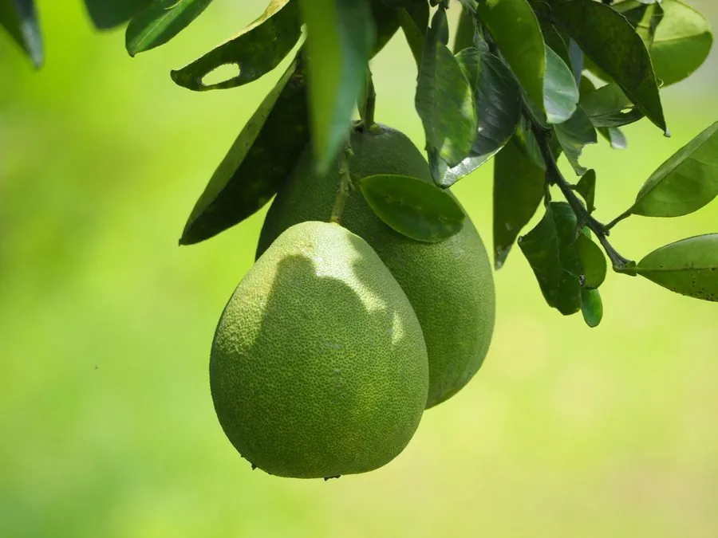

农作物与经济植物 · 植物界
柚子 Citrus maxima

柚子是芸香科常绿乔木，果实硕大、果肉清甜多汁，耐贮藏，可鲜食或加工蜜饯，是中秋时节常见的柑橘类水果。
- 分类
- 门被子植物门纲双子叶植物纲目芸香目科芸香科属柑橘属
- 栖息环境
- 亚热带河谷与丘陵，喜温暖湿润和深厚土壤
- 地理分布
- 原产中国南部与东南亚，中国广西、福建、广东等地盛产
- 保护级别
- 暂无评估（栽培作物）
物种志
柚子是芸香科常绿乔木，株高可达 5–10 m，枝条有刺，嫩枝被柔毛。叶片阔卵形或椭圆形，叶柄有倒心形宽翼。花白色，芳香。果实为柑果，大型，近球形或梨形，果皮厚，黄绿色或黄色，海绵层包裹着成簇的汁胞，果肉有白色、粉红或红色，汁胞细长，清甜多汁。
柚子原产中国南部与东南亚，栽培历史悠久，中国是柚的重要原产地之一。它喜温暖湿润、光照充足，适宜在土层深厚、排水良好的地方生长。果实秋季成熟，耐贮藏，可存放数月。除鲜食外，柚皮可制蜜饯、柚皮糖，果肉可制果汁；柚木材质细密。广西沙田柚、福建琯溪蜜柚等都是著名品种。柚子在民间常象征团圆，是中秋应节水果。
形态与习性
- 株高5–10 m，常绿乔木
- 叶阔卵形，叶柄有宽翼
- 果实大型柑果，果皮厚
- 果肉白色、粉红或红色
- 成熟期秋季
- 用途鲜食、蜜饯与果汁
趣味知识
- 柚子果实硕大，是柑橘类中果实最大的种类之一。
- 柚皮厚而耐贮，可加工成柚皮糖和蜜饯。
- 广西沙田柚、福建琯溪蜜柚都是著名的地方品种。